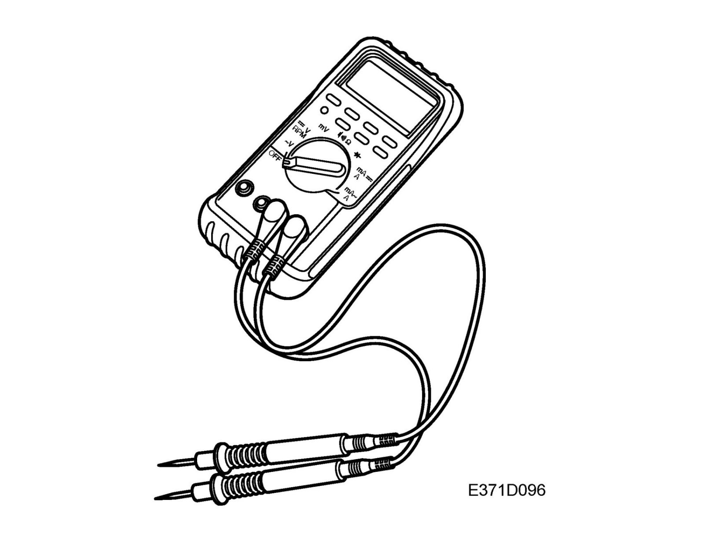
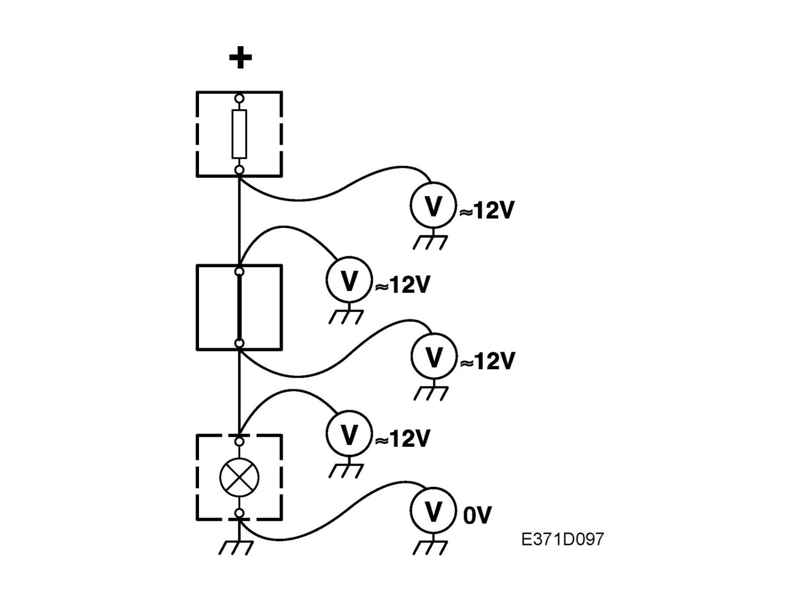
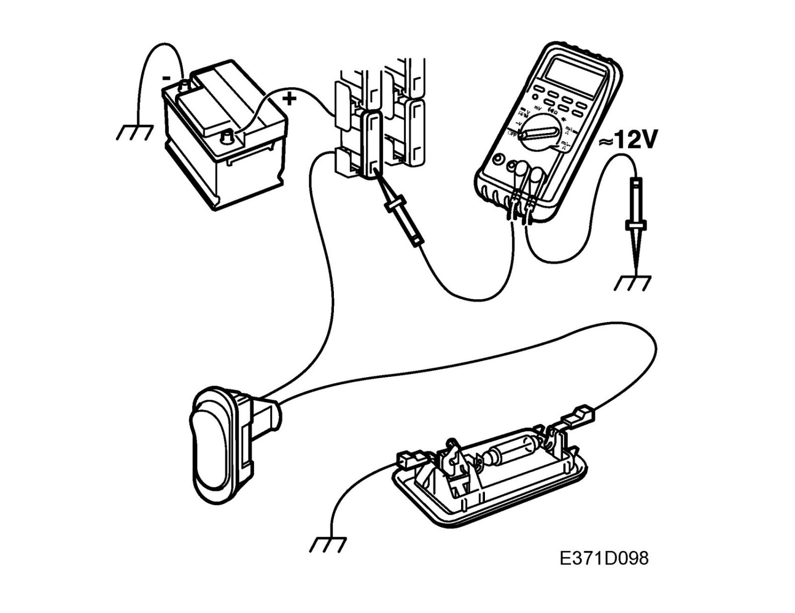
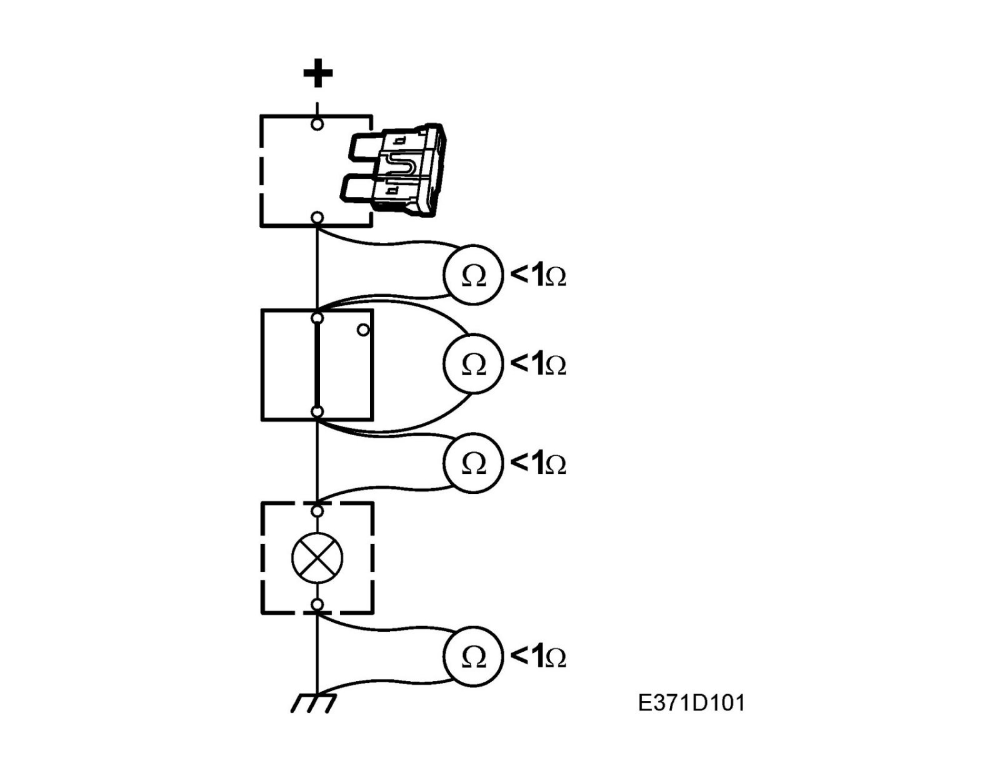
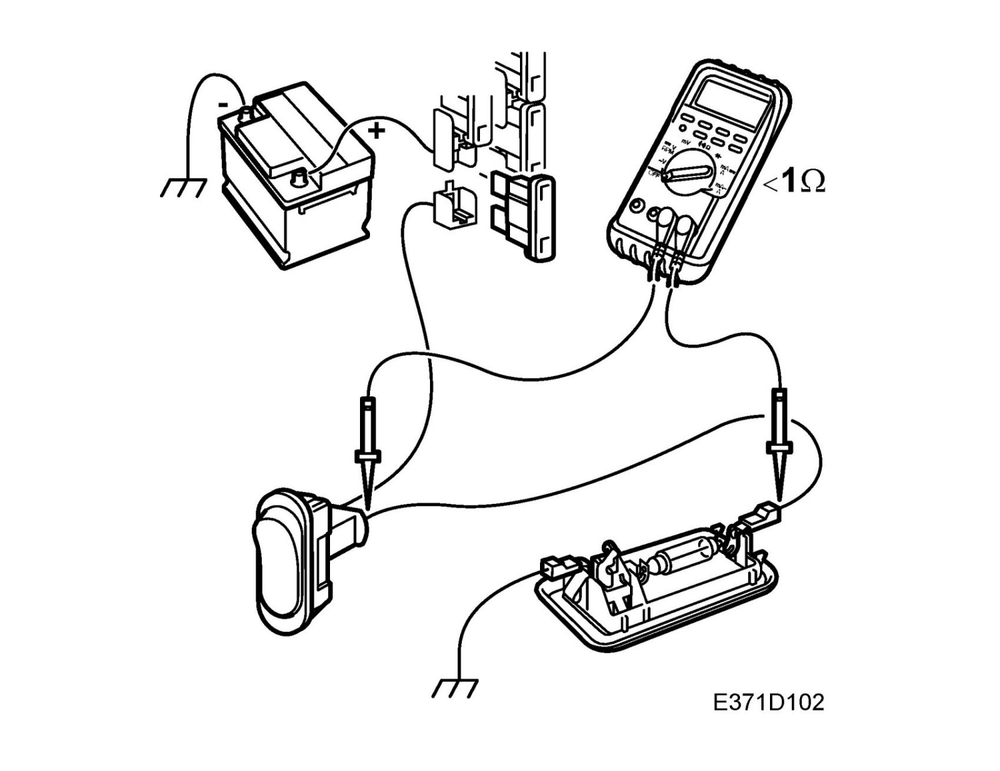
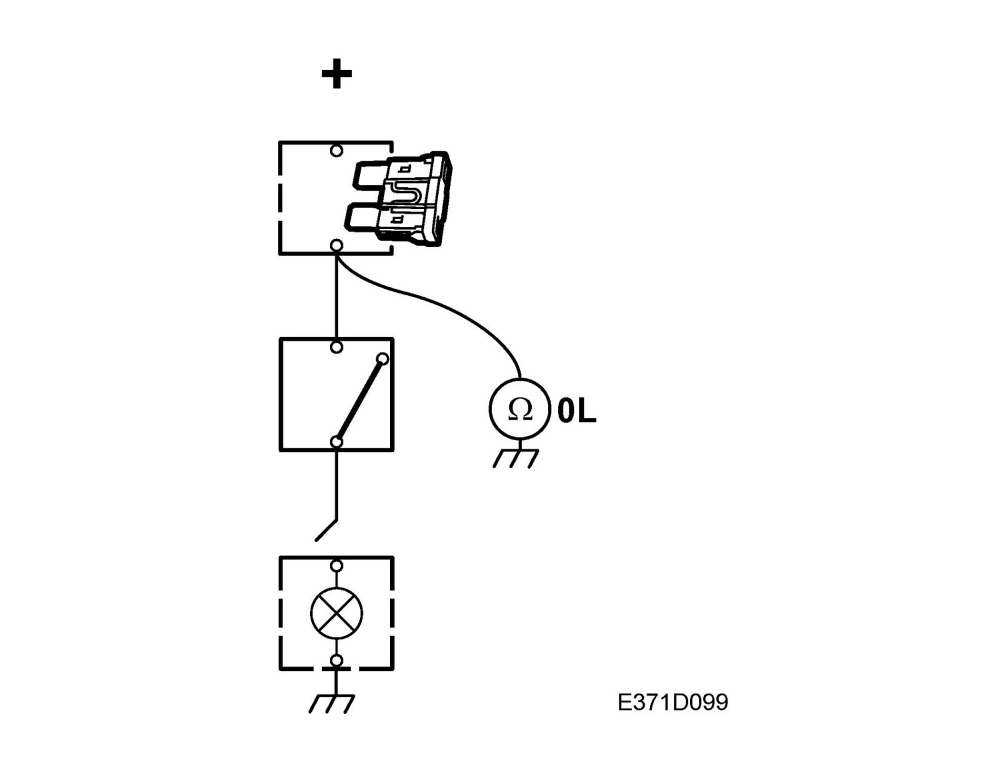
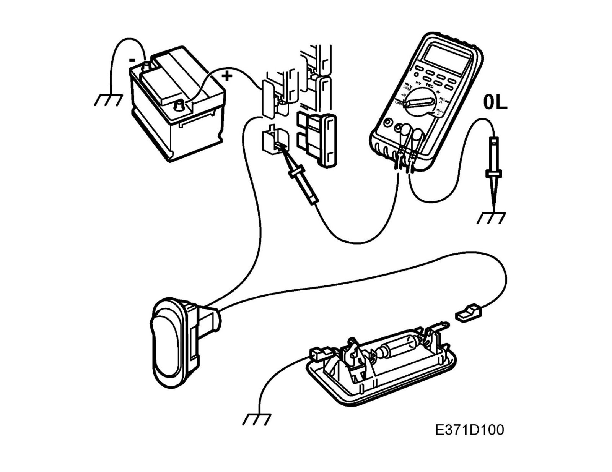

Testing For Open/Short Circuits
Testing for open/short circuitsGeneral

A suitable instrument to use is a multimeter.
The ohmmeter must not be used to test components containing semi-conductors, e.g. control modules and relay with timing functions, etc.
When measuring resistance, the power supply to the system being tested must be disconnected as the measuring instrument generates a weak current in the circuit in question.
This is done to ensure that there is no current already in the tested circuit and that the correct reading is obtained.
Testing for open circuits by measuring voltage.


1. Turn on the load.
2. Set the multimeter for measuring voltage and connect the negative lead of the voltmeter to a good grounding point.
3. Connect the positive lead of the voltmeter to the point where the voltage is to be read.
4. On the output side of switches/control modules, it is better to start checking from these and gradually work your way towards the load.
When there is no longer a voltage reading, you will have gone past the break point.
5. On the input side of switches/control modules/consumers, it is better to start at the power source (normally a fuse) and then move gradually towards the switch/control module/consumer.
When there is no longer a voltage reading, you will have gone past the break point.
Testing for open circuits by measuring resistance


1. Make sure the component or lead to be tested is not under tension (e.g. by removing the relevant fuse).
2. Set the multimeter for measuring ohms and connect the ohmmeter to each end of the component/lead to be tested.
3. Jiggle the relevant wiring harness while observing the ohmmeter.
Normally, the resistance of a wiring harness is less than 1 ohm. Specified values apply to components.
Testing for short circuits to ground


1. Make sure the lead being tested is not under tension (e.g. remove the relevant fuse) and that any loads are disconnected.
2. Set the multimeter for measuring ohms.
3. Connect one test lead to a good ground and the other to the point to be tested.
4. Carefully jiggle the wiring harness and make sure the multimeter reading shows infinite resistance (OL) all the time.